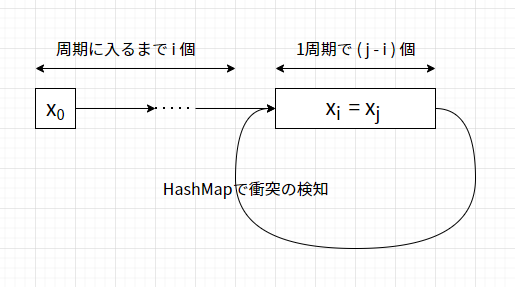

ABC179 A~E解説
A - Plural Form
文字列の最後の文字はs[len(s)-1]でアクセスすることが出来ます.
これを用いてif文を使えば良いです.
s = input()
if s[len(s)-1] == 's':
print(s+"es")
else:
print(s+"s")B - Go to Jail
問題文の通りぞろ目が三つ続いていれば良いです. このとき目の数字は同じである必要はないことに注意します.
use proconio::*;
fn main() {
input! {
n:usize,
d:[(i64, i64); n],
}
let mut f = false;
for i in 0..n - 2 {
if d[i].0 == d[i].1 && d[i + 1].0 == d[i + 1].1 && d[i + 2].0 == d[i + 2].1 {
f = true;
break;
}
}
if f {
println!("Yes");
} else {
println!("No");
}
}C - A x B + C
$C$の値の自由度が高いため, $1\leqq x \leqq N-1$を満たす全ての$x$について約数列挙をすればいいように思えますが, 約数列挙は$O(\sqrt N)$かかるため全体で$O(N\sqrt N)$かかるためTLEします. Cで計算量を意識した問題が出るとは思っていませんでした.
このため, あるAを固定したとき, Bの上限$B_M$が定まり, $1\leqq b \leqq B_M$を満たす$B = b$とすれば,Cを適切に定めることで適切な$(A,B,C)$の組を作ることが出来ます.
従って, 以下のようなコードにすることが出来ます.
use proconio::*;
fn main() {
input! {
n:i64,
}
let mut res = 0i64;
for i in 1..n {
if n % i == 0 {
res += n / i - 1;
} else {
res += n / i;
}
}
println!("{}", res);
}D - Leaping Tak
あるマス$i$について, それにたどり着く方法をdp[i]と置くことにします.
$K$個の閉区間の中に含まれている数が移動できる幅なので, 以下のように表すことが出来ます.
$K$個の閉区間の和集合を$S$とし,
$$ \text{dp}[i] = \begin{cases} 0 \quad \text{if } i < 0 \\ 1 \quad \text{if } i = 0 \\ \sum_{s\in S}\text{dp}[i-s] \\ \end{cases} $$
しかしこれでは遷移に$O(N)$かかってしまうので, 全体としての計算量が$O(N^2)$となり間に合いません. そこで, それぞれが区間として表されていることに着目すると, 以下のように書き換えることが出来ます.
$$ \text{dp}[i] = \begin{cases} 0 \quad \text{if } i < 0 \\ 1 \quad \text{if } i = 0 \\ \sum_{i\in 1}^{k}\sum_{j=L_i}^{R_i}\text{dp}[i-j] \\ \end{cases} $$
さて, $\sum_{j=L_i}^{R_i}\text{dp}[i-j]$はdpという配列の累積和をdp_accとして用いると,$\text{dp_acc}[i-L_i] - \text{dp_acc}[i-R_i-1]$で求めることが出来ます. これを利用すると, dp[i]を求めるのに高々$K$回の計算で求めることができるため, 全体としての計算量を$O(NK)$まで削減することが出来ます.
以上のことをコードの形に起こすと以下のようになります.ここではグローバルな変数が使いたかったのでJavaを使いました.
import java.io.OutputStream;
import java.io.IOException;
import java.io.InputStream;
import java.io.PrintWriter;
import java.io.PrintStream;
import java.util.Scanner;
/**
* Built using CHelper plug-in
* Actual solution is at the top
*
* @author silviase
*/
public class Main {
public static void main(String[] args) {
InputStream inputStream = System.in;
OutputStream outputStream = System.out;
Scanner in = new Scanner(inputStream);
PrintWriter out = new PrintWriter(outputStream);
DLeapingTak solver = new DLeapingTak();
solver.solve(1, in, out);
out.close();
}
static class DLeapingTak {
long[] dp_acc;
static long MOD = 998244353;
public void solve(int testNumber, Scanner in, PrintWriter out) {
int n = in.nextInt();
int k = in.nextInt();
int[] l = new int[k];
int[] r = new int[k];
for (int i = 0; i < k; i++) {
l[i] = in.nextInt();
r[i] = in.nextInt();
}
long[] dp = new long[n];
dp_acc = new long[n];
for (int i = 0; i < n; i++) {
dp_acc[i] = i == 0 ? 1 : 0;
}
for (int i = 1; i < n; i++) {
for (int j = 0; j < k; j++) {
dp[i] += dp_acc(i - r[j], i - l[j]);
dp[i] %= MOD;
dp_acc[i] = (dp_acc[i - 1] + dp[i]) % MOD;
}
}
System.out.println(dp[n - 1] % MOD);
}
public long dp_acc(int l, int r) {
long left, right;
if (l <= 0) {
left = 0;
} else {
left = dp_acc[l - 1];
}
if (r < 0) {
right = 0;
} else {
right = dp_acc[r];
}
return (right - left + MOD) % MOD;
}
}
}E - Sequence Sum
鳩ノ巣原理により, 数列$[f(x_i)]$ について, 各項は$m$より小さく, $f(x_i) = f(x_j)$ならば$f(x_{i+1}) = f(x_{j+1})$が成立するので, 以下の図のような周期性が成立します.

合計で$n$個の項は,周期を$k$回繰り返すことを仮定すると,
$$
i + ( j - i ) \times k + ( n - ( j - i ) \times k - i) = n
$$
が成立しますが, これの3項目がj-i以下であれば, 全体として$\text{max}_{i,j} (j-i) \simeq 10^5$ 項の余りの計算をすればいいことがわかります.
これをコードの形に落とすと以下のようになります.
use proconio::*;
use std::collections::HashMap;
fn main() {
input! {
n:i64,
mut x:i64,
m:i64,
}
let mut amari = HashMap::new();
amari.insert(-1i64, 0i64);
let mut res = 0i64;
let mut ruiseki = vec![0i64; 100005];
let mut ikkai = 0i64;
let mut start = -1i64;
let mut junban = 0i64;
let mut syuuki = -1i64;
loop {
junban += 1;
ruiseki[junban as usize] = ruiseki[(junban - 1) as usize] + x;
if amari.contains_key(&x) {
syuuki = junban - amari.get(&x).unwrap();
ikkai = ruiseki[junban as usize] - ruiseki[(junban - syuuki) as usize];
start = *amari.get(&x).unwrap();
break;
} else {
amari.insert(x, junban);
x = (x * x) % m;
if junban == n {
println!("{}", ruiseki[n as usize]);
return;
}
}
}
res = ruiseki[(start - 1) as usize];
res += (n - start + 1) / syuuki * ikkai;
for _ in 0..((n - start + 1) % syuuki) {
res += x;
x = (x * x) % m;
}
println!("{}", res);
}